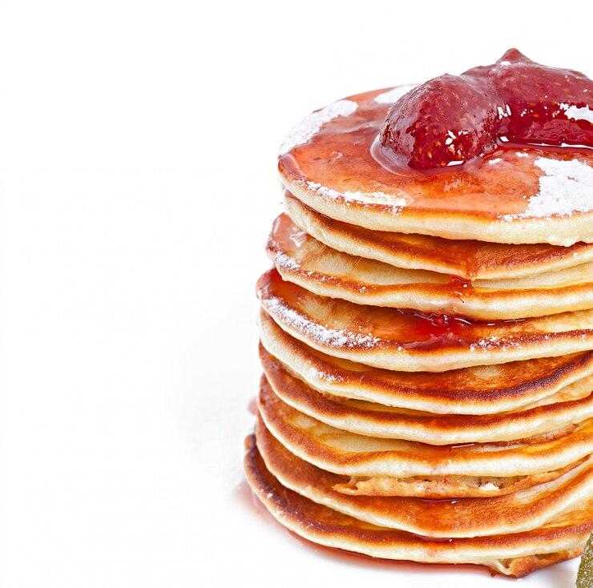

These are Fluffy Pancakes 🥞😋😋😋

Description
These fluffy pancakes are light, airy, and absolutely delicious!
Made with simple ingredients you probably already have in your kitchen,
they're perfect for weekend breakfasts or special occasions.
Serve them with butter, maple syrup, or your favorite toppings!
Needed
- 1 cup all-purpose flour
- 2 tablespoons sugar
- 2 teaspoons baking powder
- 1/2 teaspoon salt
- 1 cup milk
- 1 large egg
- 2 tablespoons melted butter
- 1 teaspoon vanilla extract
Steps
- In a large bowl, whisk together flour, sugar, baking powder, and salt.
- In another bowl, combine milk, egg, melted butter, and vanilla extract.
- Pour the wet ingredients into the dry ingredients and stir until just combined (don't overmix).
- Heat a non-stick pan or griddle over medium heat.
- Pour 1/4 cup of batter for each pancake onto the hot surface.
- Cook until bubbles form on the surface and edges look set, about 2-3 minutes.
- Flip and cook for another 1-2 minutes until golden brown.
- Serve hot with your favorite toppings!